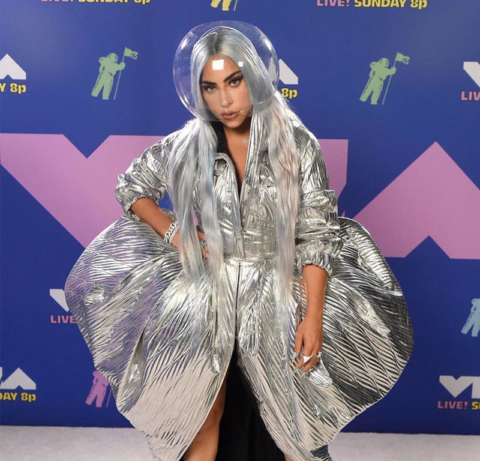

Los premios MTV Video Music Awards 2020 fueron entregados el 30 de agosto de 2020 por el canal de televisión estadounidense MTV en reconocimiento a los mejores artistas y videos musicales del último año. La ceremonia de entrega fue transmitida en directo desde Nueva York y fue el primer evento que se llevó a cabo en dicha ciudad desde el comienzo de la pandemia de enfermedad por coronavirus. La presentadora fue la actriz y cantante Keke Palmer. La ceremonia iba a realizarse en el Barclays Center de Brooklyn con público limitado o ausente, por órdenes del gobernador de Nueva York, Andrew Cuomo, con respecto a los controles pandémicos, pero la producción de MTV y el Barclays Center decidieron mutuamente el 7 de agosto de 2020 cancelar su plan inicial de hacer el evento al interior del recinto por medidas de seguridad. Para garantizar un ambiente seguro para los involucrados, MTV optó por transmitir presentaciones musicales al aire libre desde los cinco distritos de Nueva York: Manhattan, Brooklyn, Queens, el Bronx y Staten Island.5 El objetivo de esta ceremonia fue ayudar a revitalizar la ciudad tras el impacto de la pandemia y sus medidas de cuarentena y distanciamiento físico. En este contexto, los VMAs 2020 tuvieron tres categorías especiales: Mejor video musical desde casa, Mejor actuación de cuarentena y Héroes cotidianos: trabajadores médicos de primera línea.
© Lucía Álvarez Núñez / CONTACTO